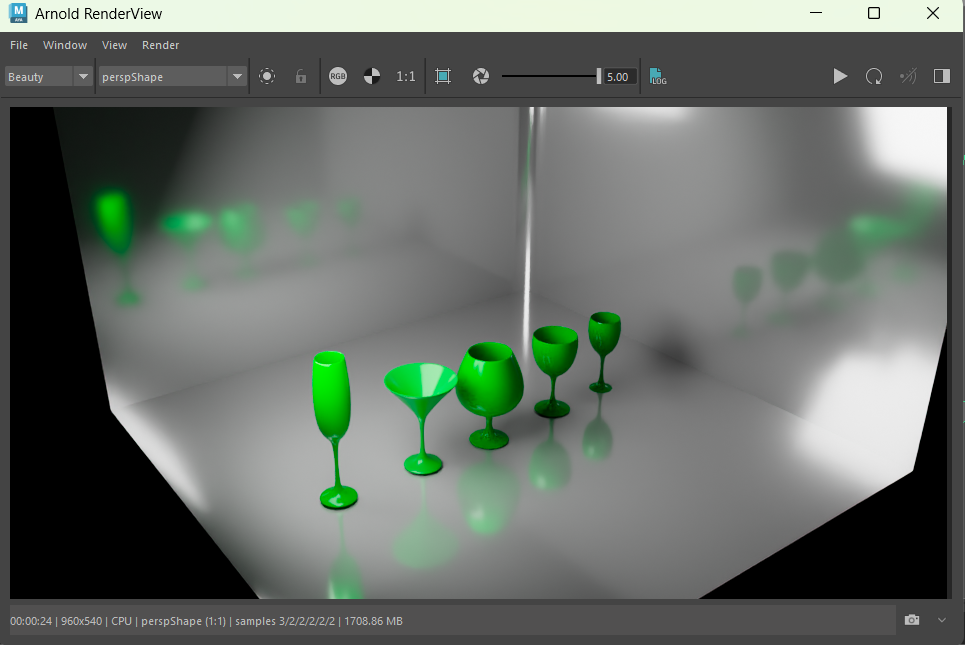

Projects
A selection of games and 3D work — built from scratch across Unity, C#, and Autodesk Maya.

Zombie Survival
A top-down third-person zombie shooter built entirely from scratch in Unity using C#. The player must survive as long as possible while wave difficulty scales with score — the higher you climb, the harder it gets. Designed and coded solo, from player controller to enemy spawning logic.

Glass Material Study
A material and lighting study rendered in Arnold for Maya. Five distinct glassware models — champagne flute, martini glass, wine glass, tumbler, and goblet — each with custom shader settings to simulate refraction, reflectance, and caustic light behavior. Focus was on understanding how light interacts with transparent surfaces in a 3D pipeline.

Space Scene
A 3D scene built in Autodesk Maya featuring a textured Earth model with orbital path curves and a modeled rocket ship. Demonstrates scene composition, object modeling, texture mapping, and spatial layout within a Maya environment.